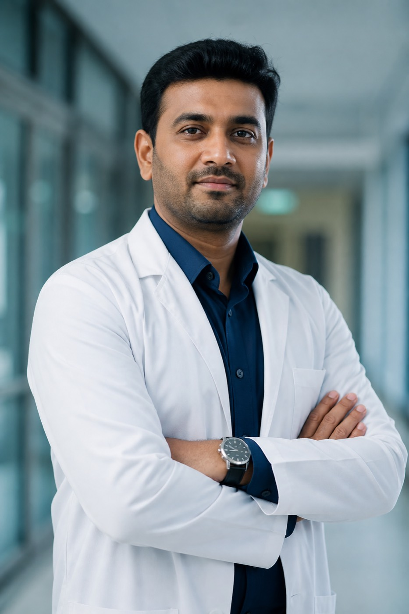

1
Hip and Knee Replacement
Primary joint replacement for advanced arthritis, supported by structured rehabilitation.

Dr. Chethan Kumar – Consultant Orthopaedic, Joint Replacement, Sports Injury & Trauma Specialist in JP Nagar and RR Nagar, Bengaluru.
Dr. Chethan Kumar is a consultant orthopaedic surgeon serving patients in JP Nagar, RR Nagar, Banashankari, Uttarahalli, Kanakapura Road, Jayanagar and South Bengaluru.
He combines surgical expertise with conservative treatment approaches, helping patients understand their condition and explore all appropriate options before making a decision.
Meet Dr. Chethan KumarPrimary joint replacement for advanced arthritis, supported by structured rehabilitation.
Minimally invasive procedures for conditions affecting the meniscus, ACL, shoulder and cartilage.
Assessment and treatment of ligament, tendon and overuse injuries in amateur and competitive athletes.
Care for accident- and fall-related bone injuries, ranging from simple to complex fractures.
Surgery counts and years of experience will be published after the clinic verifies them.
From joint pain to complex trauma, treatment is tailored to your condition, age and activity goals.
Knee replacement surgeon in JP Nagar, Bengaluru for advanced osteoarthritis and deformity.
Learn more →Hip replacement surgeon serving RR Nagar and Bengaluru South for arthritis and avascular necrosis.
Learn more →Minimally invasive keyhole surgery for joints, with faster recovery than open procedures.
Learn more →Sports injury doctor in JP Nagar for ligament tears, overuse injuries and return-to-play plans.
Learn more →Shoulder pain, frozen shoulder and rotator cuff tears treated with physiotherapy or surgery.
Learn more →Reconstruction and repair for knee instability after twisting injuries on the field.
Learn more →Trauma surgeon in RR Nagar for fractures, accidents and complex bone injuries.
Learn more →Sciatica, disc prolapse and chronic backache with staged, non-surgical first care.
Learn more →Cervical spondylosis and radiating arm pain assessed and treated conservatively first.
Learn more →Joint pain specialist in Bengaluru South for osteoarthritis and inflammatory arthritis.
Learn more →Fractures, growth-related pain and congenital orthopaedic concerns in children.
Learn more →Bone health, fracture risk reduction and medical care for weak bones.
Learn more →If you live near JP Nagar, RR Nagar or Kanakapura Road, you can be evaluated for common orthopaedic conditions without travelling across the city.
Anonymized examples of typical care pathways. They are not Google reviews and do not guarantee results. Verified reviews will be added when the clinic Google profile is connected.
A patient from Uttarahalli with severe knee arthritis progressed from limited household walking to independent outdoor walking after staged treatment. Individual results vary.
Sciatica from a slip disc improved with guided rest, medication and physiotherapy — surgery was not needed in this case.
After hip replacement for advanced arthritis, a patient from Kanakapura Road focused on supervised rehab and gradual activity.
Submit the form to open WhatsApp with your details filled in. You can also message directly.
JP Nagar: 3rd Phase, JP Nagar, Near Mini Forest, Bengaluru – 560078
Mon–Sat: 9:00 AM – 8:00 PM | Sun: 10:00 AM – 2:00 PM
RR Nagar: Ideal Homes Layout, RR Nagar, Bengaluru – 560098
Mon–Sat: 10:00 AM – 7:00 PM | Sun: Closed